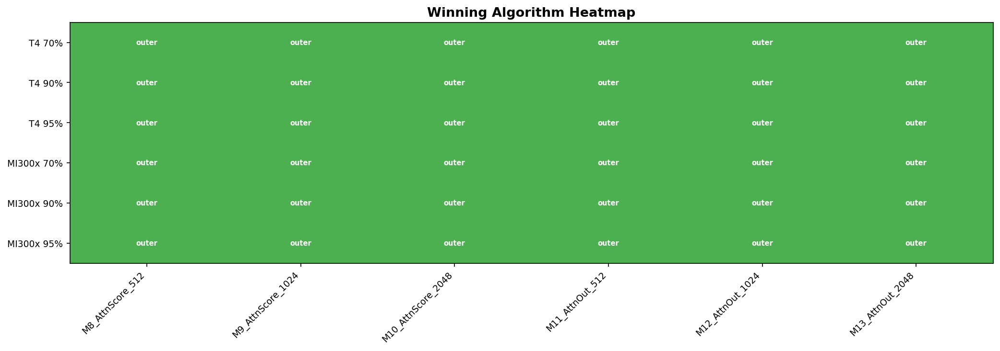
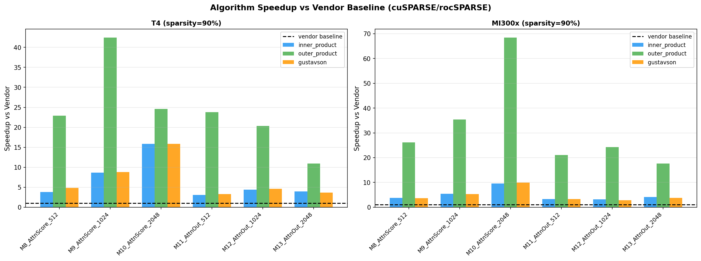
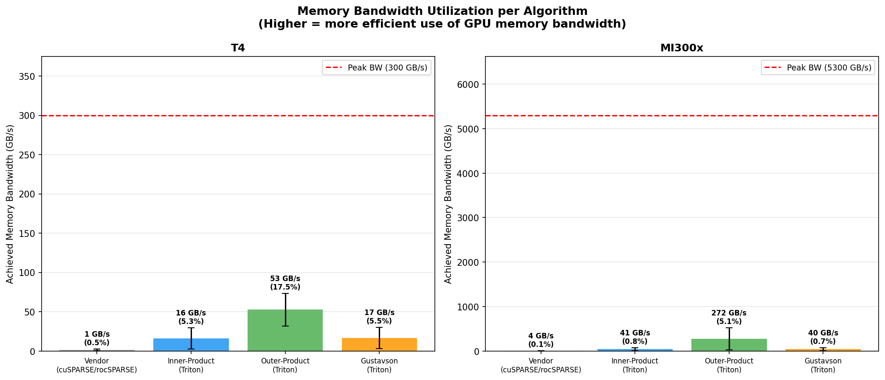
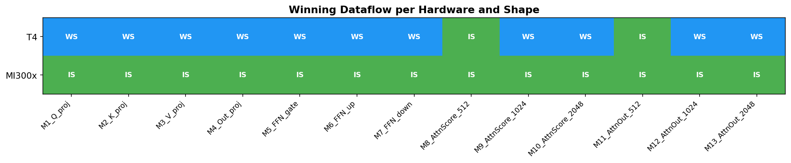

I benchmarked three sparse SpMSpM algorithms — inner-product, outer-product, and Gustavson's algorithm — against vendor-optimized libraries, namely cuSPARSE on NVIDIA T4 and rocSPARSE on AMD MI300x, using LLM-realistic top-k attention sparsity. The results surprised me: all three Triton implementations outperformed the vendor libraries in every test case, with the outer-product approach achieving up to a 198× speedup over rocSPARSE.
This post explains what I benchmarked, what I found, and — most importantly — why outer-product wins.
Background
Modern LLMs exhibit natural sparsity in their attention score matrices. After softmax, most attention weights are near-zero — only a small fraction of token pairs carry significant attention mass. This is the "heavy hitter" phenomenon observed by H2O, SnapKV, and StreamingLLM. Exploiting this sparsity requires efficient sparse matrix multiplication (SpMSpM) kernels.
The Zhang et al. analyse inner-product, outer-product, and Gustavson's algorithms for SpMSpM on hardware accelerators. My work extends this to GPU hardware using Triton and adds a direct comparison against vendor-optimised sparse libraries.
Experimental Setup
Hardware
| Hardware | Architecture | Memory | Peak BW |
|---|---|---|---|
| NVIDIA T4 | Turing, Tensor Cores | 16GB GDDR6 | 300 GB/s |
| AMD MI300x | CDNA3, Matrix Cores | 192GB HBM3 | 5,300 GB/s |
Workloads
6 attention score matrix shapes from LLaMA 1-7B — Q×KT and scores×V at sequence lengths 512, 1024, and 2048. Sparsity levels: 70%, 90%, 95% (top-k per row, LLM-realistic).
Algorithms
| Algorithm | Strategy | Format |
|---|---|---|
| Vendor | cuSPARSE / rocSPARSE | CSR |
| Inner-product | C[i,j] = dot(A[i,:], B[:,j]) | A: CSR, B: dense |
| Outer-product | C += Σ A[:,k] × B[k,:] | dense tiling + tl.dot |
| Gustavson | C[i,:] += A[i,k] * B[k,:] | A: CSR, B: dense |
Results
Algorithm comparison
Outer-product wins 36/36 cases on both T4 and MI300x. All three Triton algorithms beat vendor on 54/54 cases. Maximum speedup: 198x over rocSPARSE on MI300x at 70% sparsity.

Winning algorithm across all shapes, sparsity levels, and hardware. Outer-product wins every single case.

Speedup vs vendor baseline at 90% sparsity. Outer-product achieves 20-40x speedup across all shapes.
Sparsity sensitivity
Higher sparsity amplifies the advantage. At 70% sparsity, outer-product achieves a mean 73x speedup over vendor. At 95%, this narrows to 15x — still very significant.
| Sparsity | T4 mean speedup | MI300x mean speedup |
|---|---|---|
| 70% | 73.5x | 70.2x |
| 90% | 24.2x | 32.1x |
| 95% | 15.3x | 24.9x |
GPU reverses the CPU algorithm ranking
The GAMMA paper found Gustavson outperforms inner-product on tensor accelerators. On GPU, the two are essentially identical — within 3% of each other on both T4 and MI300x. Outer-product dominates both on GPU.
Why Outer-Product Wins
The performance gap is explained by memory bandwidth utilization. I measured achieved memory bandwidth for each algorithm:

Mean achieved memory bandwidth per algorithm. Outer-product achieves 3.3x higher bandwidth than inner/Gustavson on T4, and 6.7x higher on MI300x.
| Algorithm | T4 (300 GB/s peak) | MI300x (5300 GB/s peak) |
|---|---|---|
| outer_product | 52.5 GB/s (17.5%) | 272 GB/s (5.1%) |
| inner_product | 16.0 GB/s (5.3%) | 40.6 GB/s (0.8%) |
| gustavson | 16.6 GB/s (5.5%) | 39.6 GB/s (0.7%) |
| vendor | 1.4 GB/s (0.5%) | 3.6 GB/s (0.1%) |
The reason is algorithmic. Outer-product processes the computation as:
C += sum_k outer(A[:,k], B[k,:]) # rank-1 updates via tl.dot()
This maps directly to tl.dot() in Triton, which compiles
to Tensor Core (NVIDIA) or Matrix Core (AMD) operations. The memory
access pattern is regular and coalesced — tiles of A and B are loaded
sequentially, accumulated into the output.
Inner-product and Gustavson both require gather operations — loading specific rows of B indexed by sparse column indices of A. This produces scattered memory loads that cannot leverage Tensor Cores efficiently, resulting in 3x lower bandwidth utilization.
Vendor libraries (cuSPARSE/rocSPARSE) use CSR format and process only non-zeros — but cannot utilize Tensor Cores for sparse operations, achieving less than 1% of peak bandwidth.
Key insight: For top-k attention sparsity, outer-product's regular tiling pattern enables Tensor Core utilization — achieving 3-7x higher memory bandwidth than gather-based algorithms and 35-140x higher than vendor CSR kernels.
MI300x: compute-bound, not memory-bound
On MI300x, outer-product achieves 272 GB/s against a 5,300 GB/s peak — only 5.1% utilization. This doesn't mean the kernel is inefficient. It means the kernel is compute-bound (Tensor Core limited), not memory-bound. MI300x's HBM3 bandwidth is so large that it feeds the Tensor Cores faster than they can consume data — the bottleneck shifts from memory to compute. This is why MI300x achieves even larger speedups than T4 for outer-product.
Dense Dataflow: a Separate Finding
I also benchmarked Weight Stationary (WS), Input Stationary (IS), and Output Stationary (OS) dataflow strategies for dense matmul across 13 LLaMA 1-7B shapes.

Winning dataflow strategy per hardware and shape. IS wins on MI300x (13/13), WS wins on T4 (11/13).
Dataflow choice is hardware-dependent. IS wins on MI300x for all shapes — HBM3 bandwidth absorbs dataflow differences. WS wins on T4 for 11/13 shapes — bandwidth constraints make weight reuse critical. OS is consistently worst (3.3x penalty on T4, 1.26x on MI300x).
Code
All kernels, benchmark scripts, results, and analysis are available at: github.com/midiareshadi/dataflow-bench
git clone https://github.com/midiareshadi/dataflow-bench.git
cd dataflow-bench
pip install torch triton pandas numpy matplotlib
# Dense dataflow benchmark
python3 dense/benchmark_t4.py
# Sparse SpMSpM benchmark
python3 sparse/benchmark_t4.py
# Bandwidth utilization analysis
python3 sparse/analysis/roofline.pyReferences
- Gamma: Leveraging Gustavson's Algorithm to Accelerate Sparse Matrix Multiplication: Zhang et al., ASPLOS 2021
- H2O: Heavy-Hitter Oracle for Efficient Generative Inference of Large Language Models: Zhang et al., 2023
- SnapKV: LLM Knows What You are Looking for Before Generation: Li et al., 2024
- StreamingLLM — Efficient streaming with attention sinks: Xiao et al., 2023
- Triton: github.com/openai/triton